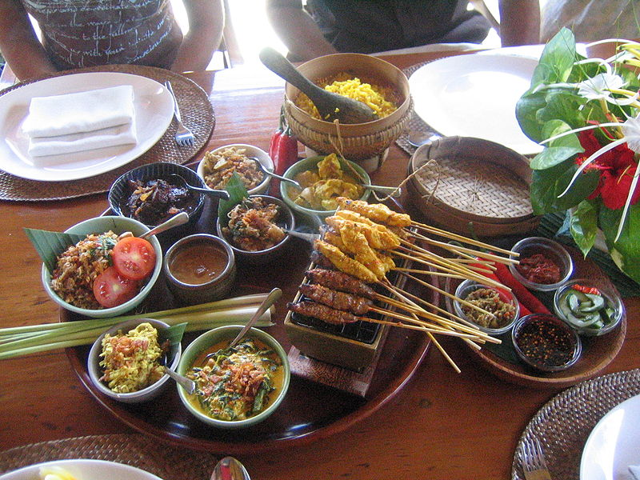
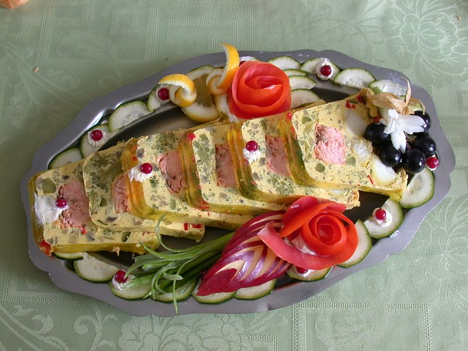
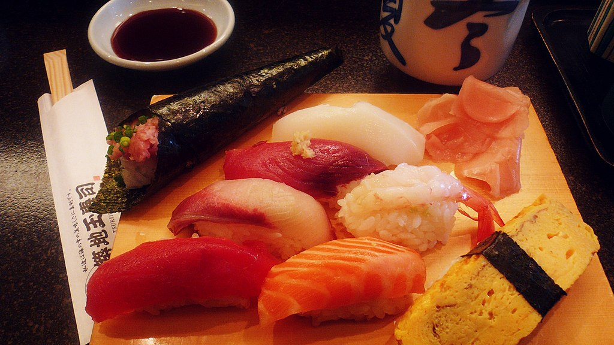
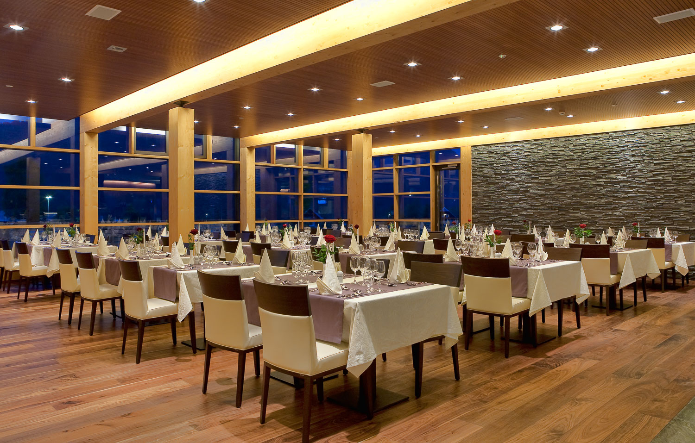
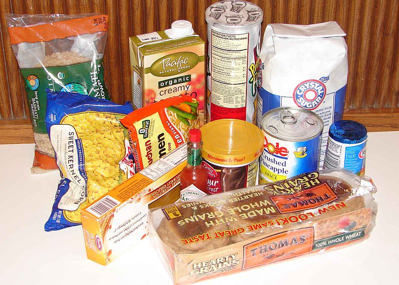

Many scholars claim that the rhetorical function of food is to represent the culture of a country, and that it can be used as a form of communication. According to Goode, Curtis and Theophano, food "is the last aspect of an ethnic culture to be lost".
Many cultures have a recognizable cuisine, a specific set of cooking traditions using various spices or a combination of flavors unique to that culture, which evolves over time. Other differences include preferences (hot or cold, spicy, etc.) and practices, the study of which is known as gastronomy. Many cultures have diversified their foods by means of preparation, cooking methods, and manufacturing. This also includes a complex food trade which helps the cultures to economically survive by way of food, not just by consumption.
Some popular types of ethnic foods include Italian, French, Japanese, Chinese, American, Cajun, Thai, African, Indian and Nepalese. Various cultures throughout the world study the dietary analysis of food habits. While evolutionarily speaking, as opposed to culturally, humans are omnivores, religion and social constructs such as morality, activism, or environmentalism will often affect which foods they will consume. Food is eaten and typically enjoyed through the sense of taste, the perception of flavor from eating and drinking. Certain tastes are more enjoyable than others, for evolutionary purposes.
Presentation

Aesthetically pleasing and eye-appealing food presentations can encourage people to consume foods. A common saying is that people "eat with their eyes". Food presented in a clean and appetizing way will encourage a good flavor, even if unsatisfactory.
Contrast in texture
Texture plays a crucial role in the enjoyment of eating foods. Contrasts in textures, such as something crunchy in an otherwise smooth dish, may increase the appeal of eating it. Common examples include adding granola to yogurt, adding croutons to a salad or soup, and toasting bread to enhance its crunchiness for a smooth topping, such as jam or butter.
Contrast in taste
Another universal phenomenon regarding food is the appeal of contrast in taste and presentation. For example, such opposite flavors as sweetness and saltiness tend to go well together, as in kettle corn and nuts.
Food preparation
While many foods can be eaten raw, many also undergo some form of preparation for reasons of safety, palatability, texture, or flavor. At the simplest level this may involve washing, cutting, trimming, or adding other foods or ingredients, such as spices. It may also involve mixing, heating or cooling, pressure cooking, fermentation, or combination with other food. In a home, most food preparation takes place in a kitchen. Some preparation is done to enhance the taste or aesthetic appeal; other preparation may help to preserve the food; others may be involved in cultural identity. A meal is made up of food which is prepared to be eaten at a specific time and place.
- Animal preparation
The preparation of animal-based food usually involves slaughter, evisceration, hanging, portioning, and rendering. In developed countries, this is usually done outside the home in slaughterhouses, which are used to process animals en masse for meat production. Many countries regulate their slaughterhouses by law. For example, the United States has established the Humane Slaughter Act of 1958, which requires that an animal be stunned before killing. This act, like those in many countries, exempts slaughter in accordance to religious law, such as kosher, shechita, and dhabīḥah halal. Strict interpretations of kashrut require the animal to be fully aware when its carotid artery is cut.
On the local level, a butcher may commonly break down larger animal meat into smaller manageable cuts, and pre-wrap them for commercial sale or wrap them to order in butcher paper. In addition, fish and seafood may be fabricated into smaller cuts by a fish monger. However, fish butchery may be done on board a fishing vessel and quick-frozen for preservation of quality.
- Cooking

The term "cooking" encompasses a vast range of methods, tools, and combinations of ingredients to improve the flavor or digestibility of food. Cooking technique, known as culinary art, generally requires the selection, measurement, and combining of ingredients in an ordered procedure in an effort to achieve the desired result. Constraints on success include the variability of ingredients, ambient conditions, tools, and the skill of the individual cook. The diversity of cooking worldwide is a reflection of the myriad nutritional, aesthetic, agricultural, economic, cultural, and religious considerations that affect it.
Cooking requires applying heat to a food which usually, though not always, chemically changes the molecules, thus changing its flavor, texture, appearance, and nutritional properties.Cooking certain proteins, such as egg whites, meats, and fish, denatures the protein, causing it to firm. There is archaeological evidence of roasted foodstuffs at Homo erectus campsites dating from 420,000 years ago. Boiling as a means of cooking requires a container, and has been practiced at least since the 10th millennium BC with the introduction of pottery.
- Cooking equipment
There are many different types of equipment used for cooking.
Ovens are mostly hollow devices that get very hot and are used for baking or roasting and offer a dry-heat cooking method. Different cuisines will use different types of ovens. For example, Indian culture uses a tandoor oven, which is a cylindrical clay oven which operates at a single high temperature. Western kitchens use variable temperature convection ovens, conventional ovens, toaster ovens, or non-radiant heat ovens like the microwave oven. Classic Italian cuisine includes the use of a brick oven containing burning wood. Ovens may be wood-fired, coal-fired, gas, electric, or oil-fired.
Various types of cook-tops are used as well. They carry the same variations of fuel types as the ovens mentioned above. Cook-tops are used to heat vessels placed on top of the heat source, such as a sauté pan, sauce pot, frying pan, or pressure cooker. These pieces of equipment can use either a moist or dry cooking method and include methods such as steaming, simmering, boiling, and poaching for moist methods, while the dry methods include sautéing, pan frying, and deep-frying.
In addition, many cultures use grills for cooking. A grill operates with a radiant heat source from below, usually covered with a metal grid and sometimes a cover. An open pit barbecue in the American south is one example along with the American style outdoor grill fueled by wood, liquid propane, or charcoal along with soaked wood chips for smoking. A Mexican style of barbecue is called barbacoa, which involves the cooking of meats such as whole sheep over an open fire. In Argentina, an asado (Spanish for "grilled") is prepared on a grill held over an open pit or fire made upon the ground, on which a whole animal or smaller cuts are grilled.
- Raw food preparation

Certain cultures highlight animal and vegetable foods in a raw state. Salads consisting of raw vegetables or fruits are common in many cuisines. Sashimi in Japanese cuisine consists of raw sliced fish or other meat, and sushi often incorporates raw fish or seafood. Steak tartare and salmon tartare are dishes made from diced or ground raw beef or salmon, mixed with various ingredients and served with baguettes, brioche, or frites. In Italy, carpaccio is a dish of very thinly sliced raw beef, drizzled with a vinaigrette made with olive oil. The health food movement known as raw foodism promotes a mostly vegan diet of raw fruits, vegetables, and grains prepared in various ways, including juicing, food dehydration, sprouting, and other methods of preparation that do not heat the food above 118 °F. An example of a raw meat dish is ceviche, a Latin American dish made with raw meat that is "cooked" from the highly acidic citric juice from lemons and limes along with other aromatics such as garlic.
Restaurants

Restaurants employ chefs to prepare the food, and waiters to serve customers at the table. The term restaurant comes from an old term for a restorative meat broth; this broth (or bouillon) was served in elegant outlets in Paris from the mid 18th century. These refined "restaurants" were a marked change from the usual basic eateries such as inns and taverns,and some had developed from early Parisian cafes, such as Cafe Procope, by first serving bouillon, then adding other cooked food to their menus.
In 2005, the population of the United States spent $496 billion on out-of-home dining. Expenditures by type of out-of-home dining were as follows: 40% in full-service restaurants, 37.2% in limited service restaurants (fast food), 6.6% in schools or colleges, 5.4% in bars and vending machines, 4.7% in hotels and motels, 4.0% in recreational places, and 2.2% in others, which includes military bases.
Food manufacturing

Packaged foods are manufactured outside the home for purchase. This can be as simple as a butcher preparing meat, or as complex as a modern international food industry. Early food processing techniques were limited by available food preservation, packaging, and transportation. This mainly involved salting, curing, curdling, drying, pickling, fermenting, and smoking. Food manufacturing arose during the industrial revolution in the 19th century. This development took advantage of new mass markets and emerging technology, such as milling, preservation, packaging and labeling, and transportation. It brought the advantages of pre-prepared time-saving food to the bulk of ordinary people who did not employ domestic servants.
At the start of the 21st century, a two-tier structure has arisen, with a few international food processing giants controlling a wide range of well-known food brands. There also exists a wide array of small local or national food processing companies.Advanced technologies have also come to change food manufacture. Computer-based control systems, sophisticated processing and packaging methods, and logistics and distribution advances can enhance product quality, improve food safety, and reduce costs.